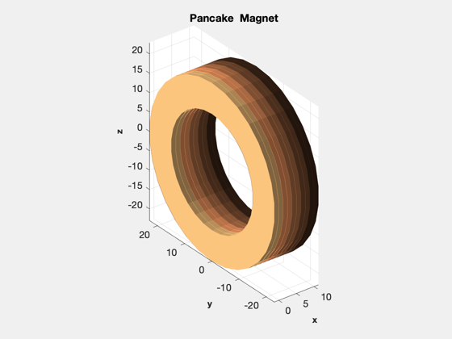

Draw a magnet using Tube
This consists of a set of double pancakes, each of which is drawn using Tube. The demo displays the model in a window with color shading to show the distinct double-pancakes.
%-------------------------------------------------------------------------- %-------------------------------------------------------------------------- % Copyright (c) 2018 Princeton Satellite Systems, Inc. % All rights reserved. %-------------------------------------------------------------------------- % Magnet radii and width rO = 23; % cm rI = 15; w = 1.2; n = 30; % divisions % Single pancake [v0,f] = Tube( rO, rI, w, n ); B = [0 0 -1; 0 1 0; 1 0 0]; v0 = (B*v0')'; NewFig('Magnet') c = [0.50196 0.14902 0.05098]; shading flat lighting gouraud hold on shades = copper; colors = flipud(ColorSpread( 5, shades )); vZ = (0:14)*1.25; ks = 1:2:10; for j = 1:5 k = ks(j); v = v0; v(:,1) = v0(:,1) + vZ(k); patch('vertices',v,'faces',f,'facecolor',colors(j,:),'edgecolor',[0.6 0.6 0.6],... 'ambient',0.5,'edgealpha',0); v(:,1) = v0(:,1) + vZ(k+1); patch('vertices',v,'faces',f,'facecolor',colors(j,:),'edgecolor',[0.6 0.6 0.6],... 'ambient',0.5,'edgealpha',0); end axis image XLabelS('x') YLabelS('y') ZLabelS('z') view(3) grid on rotate3d on s = 10*max(Mag(v')); light('position',s*[-1 0.5 0.5]) title('Pancake Magnet') %--------------------------------------